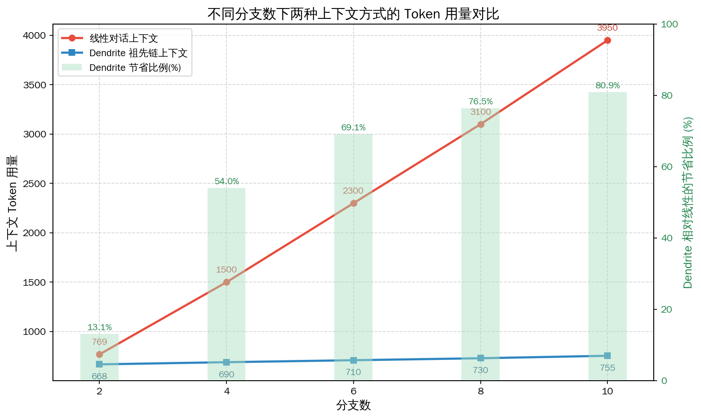
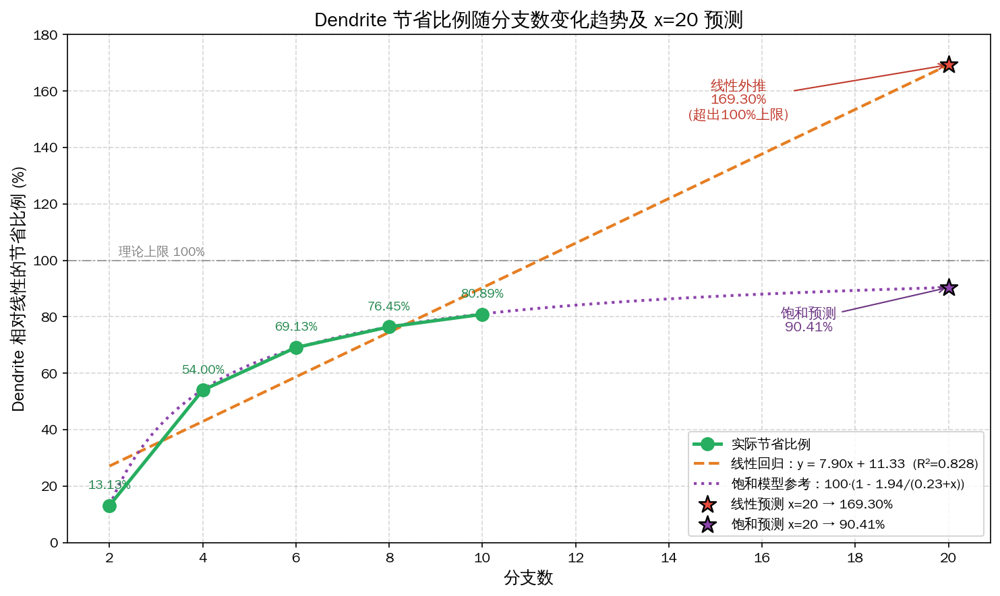

🦝 办公小浣熊 · 数据分析 Skill
via 开放 API（RACCOON_API_TOKEN）· 会话 aac643c6
我 · 上传 context_cost.csv
这份数据对比了同一棵对话树在不同分支数下两种上下文方式的 token 用量：「线性对话」把所有分支都塞进一条上下文，而「Dendrite 祖先链」只取当前节点到根的路径。请分析随分支数增加两者的差距、计算节省比例，并生成一张清晰的折线对比图。
[ocr] → [generate] → [code] → [execute] → [image]
小浣熊
数据分析 + 代码执行 + 可视化
已完成分析。
Dendrite 祖先链上下文与分支「宽度」几乎解耦，只随「深度」增长
；线性方式则随分支数线性膨胀。节省比例从 2 分支的
13.13%
升至 10 分支的
80.89%
，10 分支时线性方案的 token 已是 Dendrite 的
5.23 倍
。

我 · 多轮调优
很好。请在同一组数据上做一次调优：单独画出节省比例(%)随分支数变化的折线图，用线性回归预测分支数为 20 时的节省比例，并在图上标注预测点。
小浣熊
多轮调优 · 回归建模
线性回归（R²=0.826）外推到 x=20 得
169.30%
——已超过 100% 理论上限，不符合机理。改用
饱和模型
y=100·(1−a/(b+x)) 拟合，预测 x=20 时约
90.41%
，更可信。两个预测点已在图上标注。
